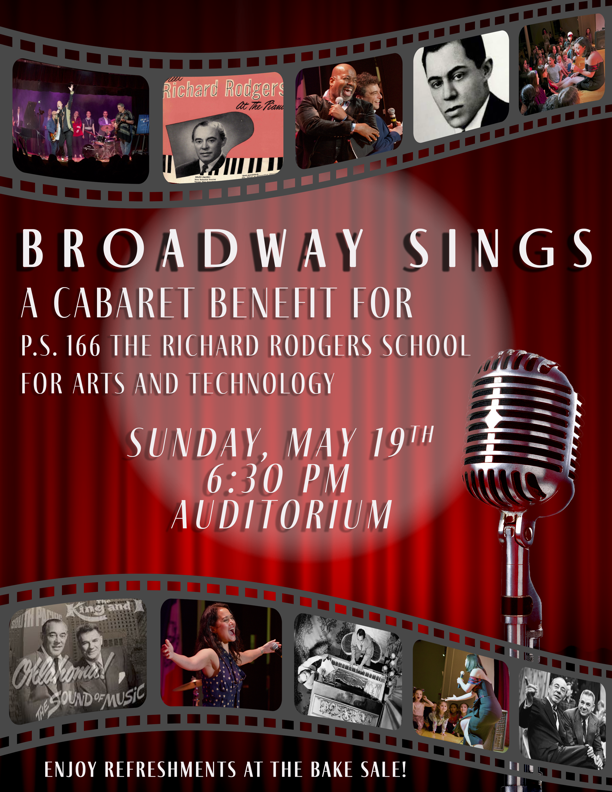
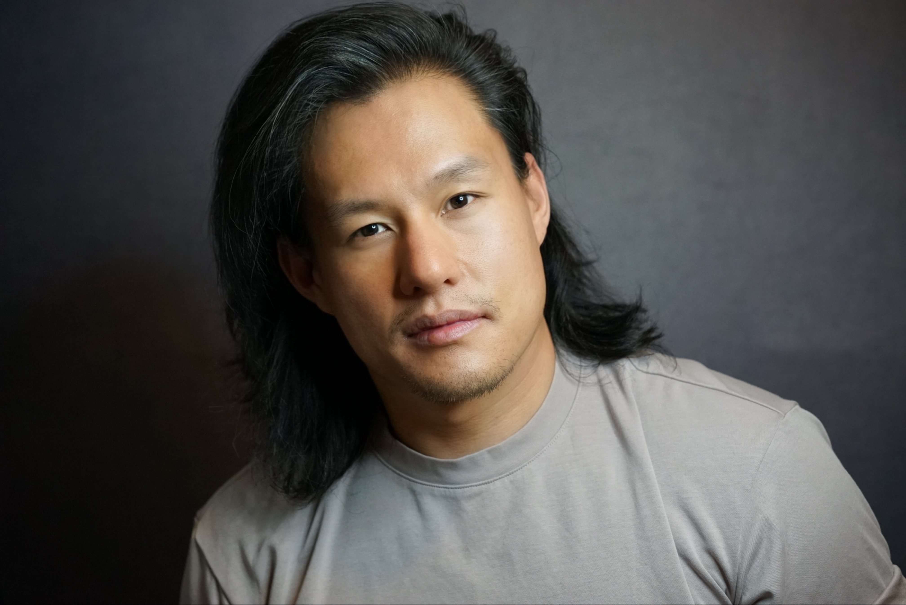
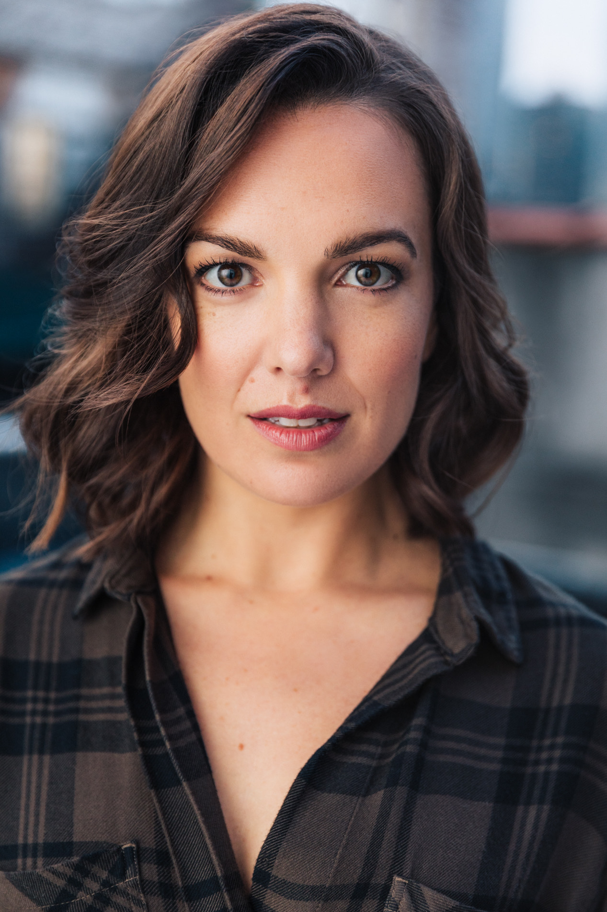
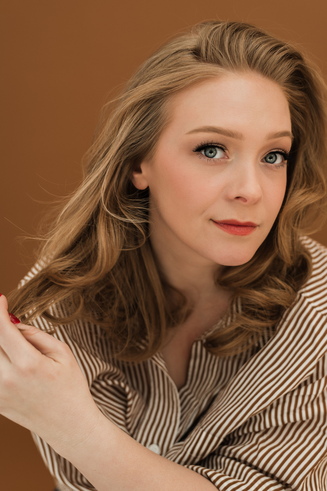

WELCOME TO BROADWAY SINGS 2024!
Program Headshots & BiosThank you all for attending our Broadway Sings concert! Your presence and support mean the world to us and our P.S. 166 community. Thank you for your generosity! Together, we are making a difference in the lives of student's education and fostering a love for the performing arts.
PROGRAM Top
Act 1
-
Route 166 Band
"Waving Through a Window"
From Dear Evan Hansen By Benj Pasek and Justin Paul
-
Marc delaCruz
"Pure Imagination"
By Leslie Bricusse and Anthony Newley
-
Jacob Gutierrez
"Put on A Happy Face"
From Bye Bye Birdie By Charles Strouse and Lee Adams
-
Kelvin Moon Loh
"The Impossible Dream"
From Man of La Mancha By Mitch Leigh and Joe Darion
-
Grace Morgan & Daniel Berryman
"All I Ask of You"
From The Phantom of the Opera By Andrew Lloydd Webber
-
Cece Popp
"Annie Medley"
From Annie By Charles Strouse and Martin Charnin
-
Morgan Anita Wood
"He Wanted A Girl"
From Giant By Michael John LaChiusa
-
VICTOR LIN
"Medley for PS166"
Act 2
-
Casey Likes
"Go the Distance"
From Hercules By Alan Menken & David Zippel
-
Ashley Blanchet
"The Best Things In Life Are Free"
From Good News by B.G. DeSylva, Lew Brown, Ray Henderson
-
Grace Morgan
"Notice Me Horton"
From Seussical by Lynn ahrens and Stephen Flaherty
-
Kara Lindsay & Kevin Massey
"You'll Be In My Heart"
From Tarzan By Phil Collins
-
Billy Tighe
"Neverland"
From Finding Neverland by Gary Barlow and Eliot Kennedy
-
Autumn Hurlbert
"So Much Better"
From Legally Blonde By Laurence O'Keefe and Nell Benjamin
HEADSHOTS & BIOS Top
-
Marc delaCruz
Marc delaCruz is a Filipino-American actor, singer, and musician. He is best known for his work in the Broadway production of Hamilton, where he played the role of Alexander Hamilton. He has also appeared in other Broadway productions, including If/Then, Allegiance, and American Idiot. Marc has also performed in regional theater productions, including Miss Saigon, The King and I, and The Fantasticks. He has also appeared in television shows such as Law & Order: Special Victims Unit and The Blacklist. Marc is a graduate of the University of California, Irvine, where he studied theater and music.
-

Ashley Blanchet
Ashley was most recently seen as Dawn in Waitress with Sara Bareilles, other Broadway credits include: Frozen, Beautiful the Carole King Musical, Annie, and Memphis. Select OffBway/Regional: Title roles in Cinderella and The Sound of Music at The Papermill Playhouse, Belle in Beauty and the Beast (St Louis MUNY), Ado Annie in Oklahoma (Pittsburgh Civic Light Opera) and Miss New Hampshire in Sarah Silverman's The Bedwetter at the Atlantic Theater. Film/TV: The Good Fight, The Equalizer, "WonderPets," Better Nate Than Ever,”and the voice of Raquelle in the award winning short animated film "Are You Okay?" You can find her on instagram: @a_Blanchet!
-

Cecilia Ann Popp (Cece)
Cece is in third grade at PS 166 and is currently making her Broadway debut as "Tommy, age 4" in The Who’s Tommy, which was just nominated for a 2024 Tony Award for Best Revival of a Musical! You can catch her performances at the Nederlander Theater on Wednesdays at 2 pm, Fridays at 7 pm, Saturdays at 2 pm, and Sundays at 3 pm. Previous theater experience includes "Veruca Salt" in Willy Wonka and "Amanda Thripp" in Matilda with the Children’s Acting Academy, and "Star To Be/ Orphan Becky" in Annie with A Class Act NY. Cece is very excited to join Broadway Sings to help benefit PS 166!
-

Kelvin Moon Loh
Kelvin Moon Loh is an actor, singer, and writer from Queens/Long Island, NY. He is best known for his appearances on Broadway in Beetlejuice, SpongeBob SquarePants, The King and I, and Side Show. Other favorite stage credits include Here Lies Love at The Public Theater, Pacific Overtures at Classic Stage, The American Idiot 1st National Tour, and Gold Mountain at Utah Shakespeare Festival. He is a vocalist in the films Spirited, Lyle Lyle Crocodile, The Greatest Showman, and the upcoming Kiss of the Spiderwoman starring Jennifer Lopez. As a writer, Kelvin has several projects in development for the screen that focus on stories told through the lens of the Asian American experience. Follow @kelvinmoonloh.
-
Jacob Gutierrez
Jacob Gutierrez currently can be found performing in Aladdin on Broadway, where he has had the pleasure of playing the title role! He recently made his American Pops Orchestra debut performing in their “Broadway’s Leading Men” Concert series to air on PBS this summer! Other regional favorite credits include The Light in the Piazza, The Little Mermaid, Cinderella, and Aladdin in Aladdin: The Musical Spectacular on Disney Cruise Line. TV: Dear Edward (Apple TV+), Bull (CBS).
-

Kara Lindsay
Broadway: Wicked (Glinda), Beautiful (Cynthia Weil), Newsies (Katherine Plumber) Original Cast/ Fathom Events Film. NYCity Center: Once Upon a Mattress (Winnifred Standby for Sutton Foster). National Tour: Wicked (Glinda), Little House on the Prairie (originated Laura). Paper Mill Playhouse: Newsies, Jolly Holiday, Little House...Prairie. Sacramento Music Circus: Singin in the Rain (Kathy Selden). NCT: Mary Poppins (Mary Poppins). Kansas City Starlight: Cinderella (Cinderella). Kansas City Rep: Cabaret (Sally Bowles). 5th Avenue: Lone Star Love (Miss Ann Page). Geva: A Christmas Carol (Belle). TV: “Murphy Brown”, ABC’s “Schoolhouse Rock! 50th Anniversary Singalong”, ABC’s “The Disney Family Singalong: Volume II”, Tony Awards, Macy’s Thanksgiving Day Parade. BFA Carnegie Mellon University. Huge thanks and LOVE to my friends, family, Stewart Talent/ Industry Entertainment. @karalindsay1
-
Kevin Massey
Broadway: Gentleman's Guide to Love and Murder (Monty Navarro u/s), Memphis (Huey u/s), Tarzan (OBC & Cast Album, Tarzan u/s), Wicked (u/s Wizard, Dillamond, swing), Deaf West’s Big River (Revival OBC, swing), Antony & Cleopatra (Eros, NYCO at Carnegie Hall). Off-Broadway: Bella: An American Tall Tale (Bonny Johnny/Snaggletooth, Playwrights Horizons, Cast Album). Tours: Gentleman's Guide... (originated Monty Navarro, 1st National), Little House on the Prairie (originated Almanzo Wilder, 1st National, Paper Mill, Guthrie Theater). Europe: Tarzan (Tarzan, Hamburg), Grease! (Doody). Select Regional: Sunset Blvd. (Artie, North Shore MT), The Rivals, musical (originated Jack Absolute, BRT), Titanic (Bride, PCLO), The Full Monty (Malcolm, PCLO), Bonnie & Clyde (Ted, Asolo Rep), The Three Musketeers (originated D’Artagnan, Chicago Shakespeare), Pippin (Pippin, Utah Shakes & KC Rep); UNC Morehead-Cain Scholar. TV: ABC’s The Disney Family Singalong: Volume II, Tony Awards, NBC & CBS Macy’s Day Parade. Love my Kara, little guy and family @kcmassey1 www.kevinmassey.com
-

Morgan Anita Wood
Morgan Anita Wood (she/her) has been on the road with Hamilton for the past few years covering all three Schuyler sisters and was most recently seen as ‘Eliza’ with the And Peggy Tour. She has since introduced the First Lady at this past Fall’s ‘Broadway for Biden’ event, been involved in several workshops and readings and performed in the new play, “Loving and Loving” at Actor’s Theatre of Louisville earlier this year. She’s also performed at the Hollywood Bowl, the Utah Shakespeare Festival, the John W. Engeman Theatre and more. She’s thrilled to be back living in NYC and honored to be here!
-

Grace Morgan
Grace is thrilled to be back supporting Broadway Sings as a PS166 parent of a kindergartener! Natl. Tours: The Phantom of the Opera (u/s Christine Daaé) Regional: Belle in A Christmas Carol (Denver Center), Sandy in Grease (Forestburgh Playhouse), Irene Molloy in Hello Dolly (Beef and Boards), Anne Egerman in A Little Night Music (Indiana Repertory). BFA in Musical Theater from The University of Michigan. Find me at www.gracemorgan.nyc and @gracemorgan12
-

Daniel Berryman
Daniel is excited to sing tonight as a PS166 parent! He can be seen in upcoming performances of Legends: The Paul Simon Songbook across North America. 2019 Lotte Lenya Competition (1st Prize Winner). New York: Call Me Madame (Ens/Encores!), Sweeney Todd (Vacation Swing/Barrow Street), The Golden Apple (Ens/Encores!), The Fantasticks (The Boy/Theatre Center). Natl. Tours: Les Miserables (Swing), The Sound of Music (Ens). Regional: Sweeney Todd (Anthony/Denver Center), Hello, Dolly! (Ambrose/MUNY), The Most Happy Fella (Ciccio/Goodspeed), and Rent (Mark/The 5th Ave Theatre). BFA in Musical Theater from The University of Michigan. Love to Gem and the boys!
-

Autumn Hurlbert
Autumn, mom of Lincoln- 1st grade, is a Broadway performer and film actress. She has also performed in 42 states and 11 countries in regional theaters, stadiums, churches, gyms, houses, ranches, restaurants, cruise ships, zoom rooms and almost any other space you can imagine a performance taking place!